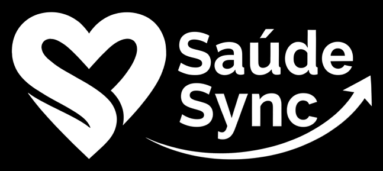

50%
dos pacientes com doenças crônicas não seguem o tratamento indicado.
Uma em cada duas pessoas.
Fonte: OMS (2003) — Adherence to Long-Term Therapies
⚠️ Conteúdo informativo. Não substitui a orientação do seu médico ou farmacêutico.

dos pacientes com doenças crônicas não seguem o tratamento indicado.
Uma em cada duas pessoas.
Fonte: OMS (2003) — Adherence to Long-Term Therapies
⚠️ Conteúdo informativo. Não substitui a orientação do seu médico ou farmacêutico.